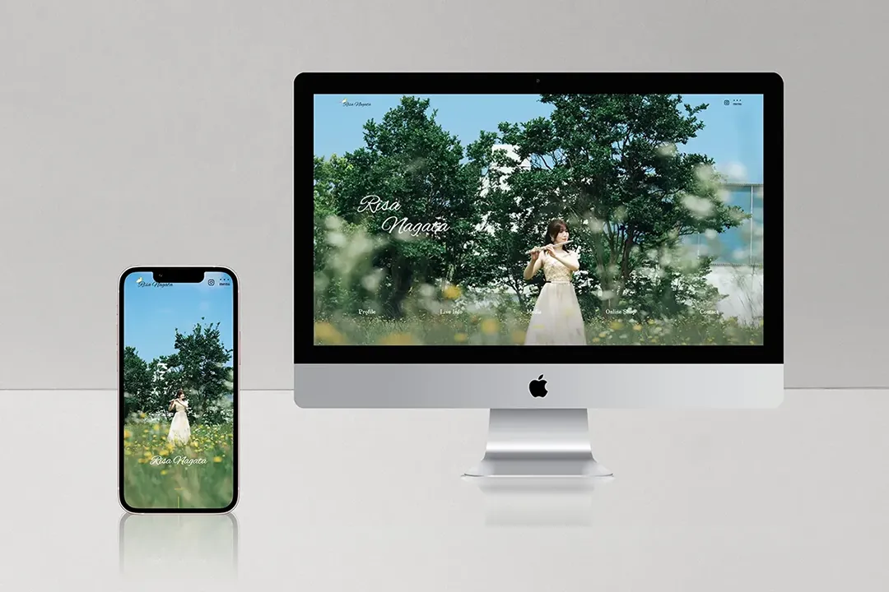

【採用作品】永田梨紗様の公式サイト
- 使用ツール
- Figma / VS Code
- 制作範囲
- デザイン / コーディング
- 制作期間
- 30時間(デザイン 15時間 / コーディング 15時間)
概要
永田梨紗様の公式サイト
目的
公式サイトでSNSの集約や新規ファンを獲得するため
コンセプト
・フルート奏者らしい上品さや清潔感
・女性ファンに好まれる配色やデザイン
ターゲット
20-40代の女性
工夫した点
こちらの作品は学校課題のグループワーク制作です。
クライアント様であるフルート奏者の永田梨紗様の公式サイトを作りました。
クラスを3チームに分け、それぞれデザイン案をプレゼンし、修正を重ねながらサイト制作を行いました。
フォントや写真選びでは、永田様のイメージが伝わりやすいものを選び、余白の取り方や配置で上品さを演出しました。
また、ターゲット層に刺さるよう、上品さに加え可愛らしさを出したく、永田様が飼われているインコのイラストを所々に配置しています。
同じグループ5人でデザインやコーディングやプレゼンの準備など、担当を分けて制作しております。
私が主に担当したところは、インコのイラスト・音源再生箇所のイラスト・デザインカンプ・プロフィールページとヘッダーのコーディングです。
実際に公式サイトとして永田様に採用していただました。